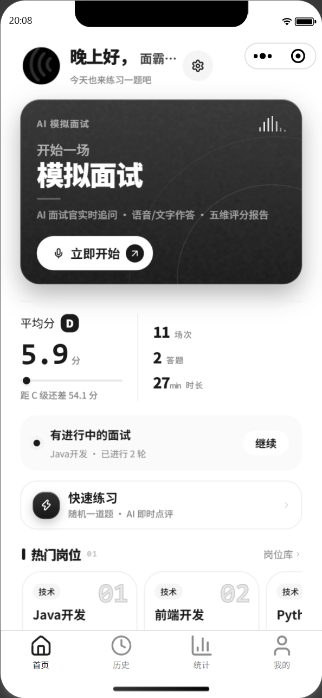
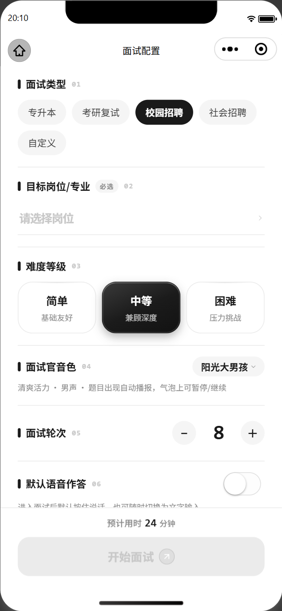
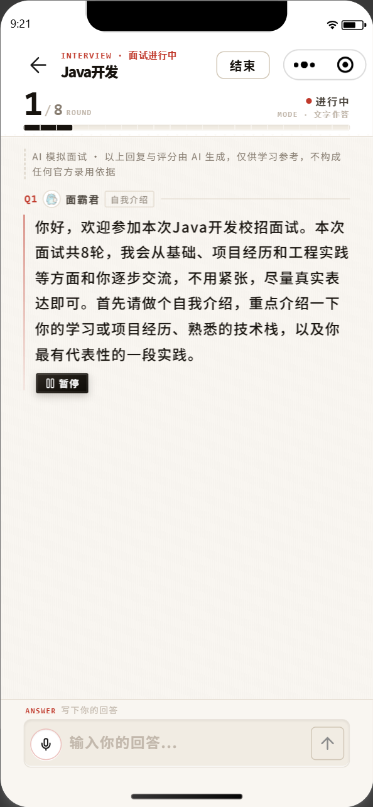
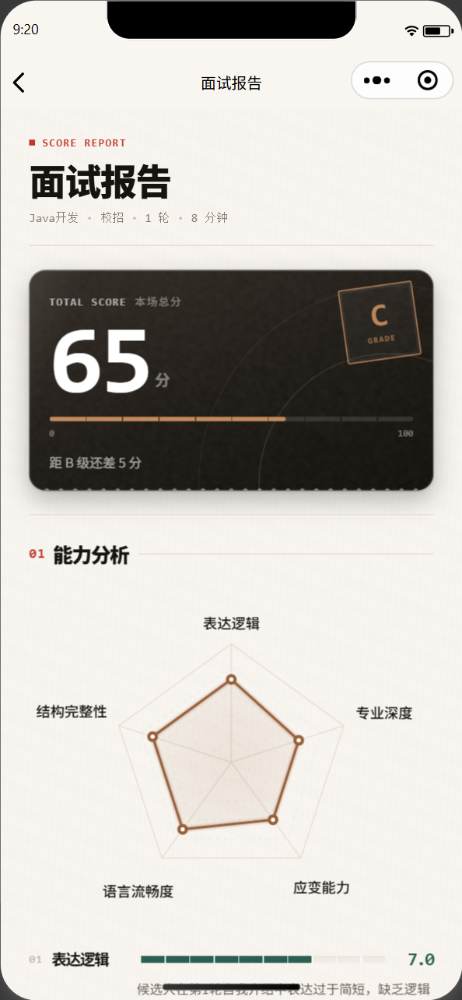
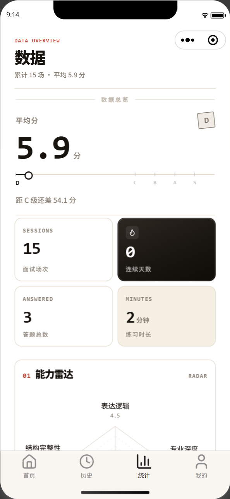
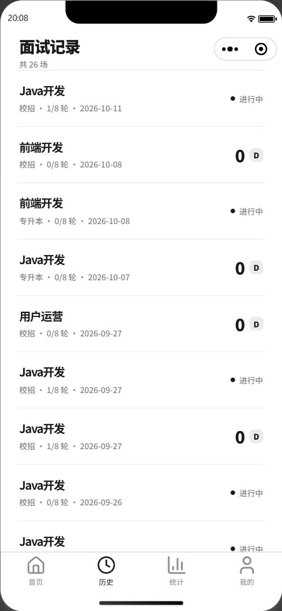
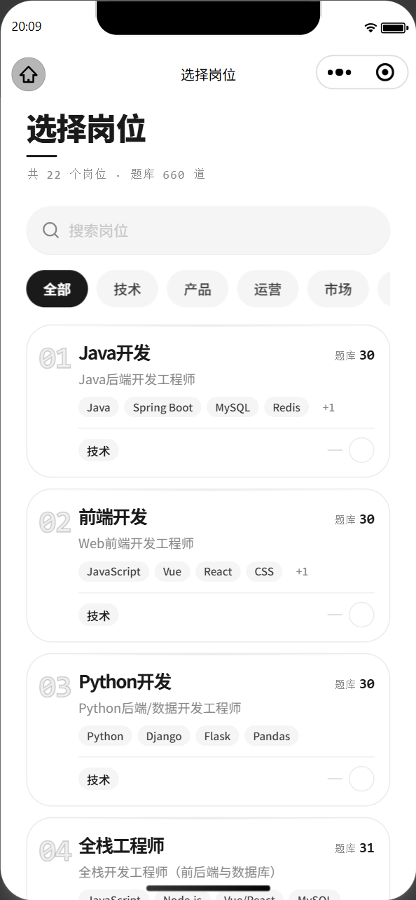
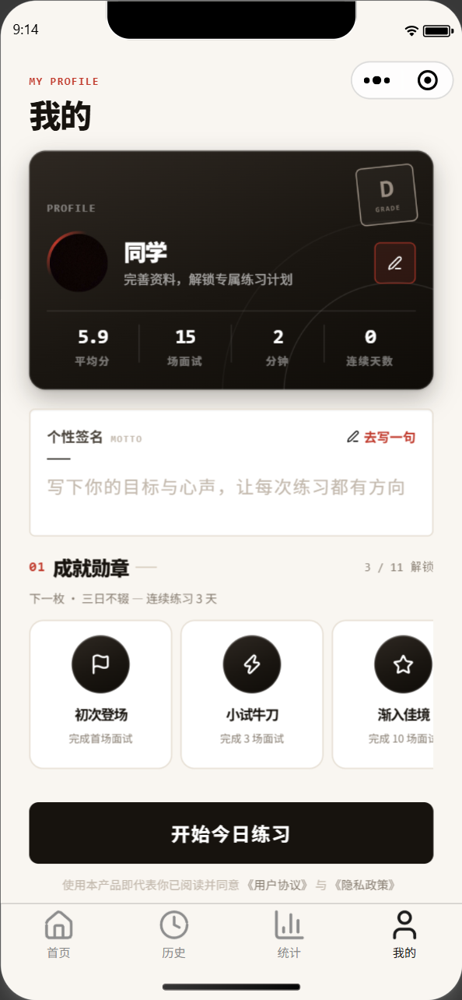

01 / AUTH
真实微信登录
wx.login 换取 code，服务端建档并签发 JWT；未登录状态有明确入口，不做 mock 登录。
我的面试小屋 · 微信小程序前端。真实微信登录、多轮 AI 追问、流式回答、TTS 播报、五维评分报告—— 不是套壳聊天框，是一条完整的面试链路。

不是套壳聊天框。
是一套从登录、追问、播报到评分的完整面试仪式。
17 个页面、15 个组件，全部围绕同一条链路：配置岗位 → 生成首题 → 多轮追问 → 结束面试 → 五维报告。
视觉不是贴皮，等级色、印章、齿孔、练习小票都从同一套设计令牌里长出来。
wx.login 换取 code，服务端建档并签发 JWT；未登录状态有明确入口，不做 mock 登录。
SSE 流式输出逐字渲染，追问基于上一轮回答继续深挖；看门狗超时兜底长回答。
雷达图、分数趋势、等级印章与逐题复盘，一次面试沉淀一份可回看的档案。







小程序没有 EventSource。用 uni.request 的 enableChunked + onChunkReceived 自己做增量解码，再配看门狗超时，避免长回答被固定超时误杀。
雷达与折线全部 SVG 自绘，几何在构建期算好；不引入 ECharts，也没有 Canvas 兼容坑。整个构建产物 0.77 MB。
SCSS 设计令牌 + JS 侧单一事实源。等级色只用于印章、读数、进度与雷达，禁止大面积铺色；纸、墨、朱砂、鎏金四层材质统一收口。
design tokens · 5 gradesLucide 几何 + morph 帧序列在构建期烘焙，运行时零图标库。播放/暂停不是换图，是同一个形状在变形。
build-time morph请求层统一拦截 401，刷新登录态后重放原请求。页面不需要写重登逻辑，登录态与业务代码彻底解耦。
request replayTTS / ASR 失败静默回落文字，流式失败自动重试。任何一条链路断了，面试主流程仍然能走完。
graceful degradation